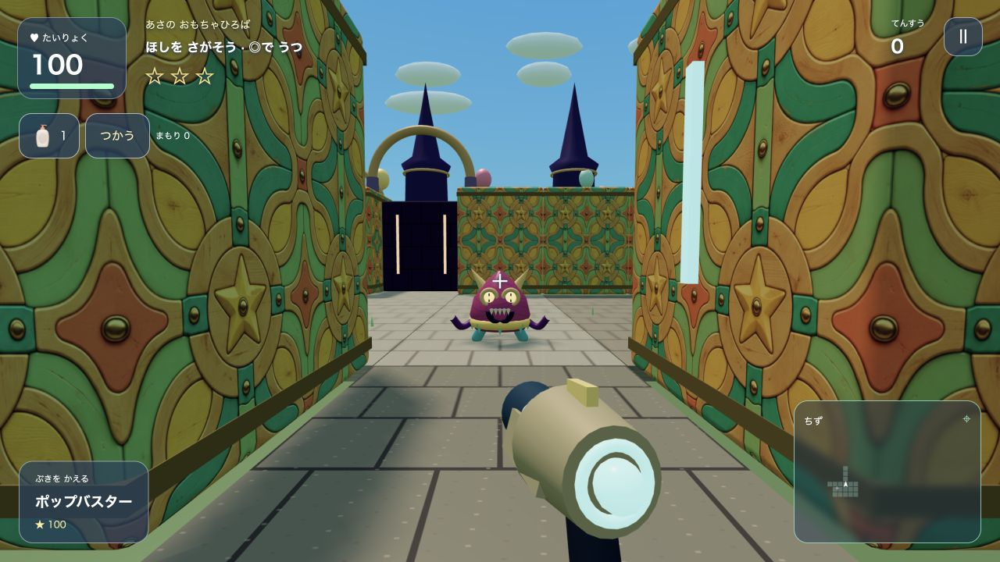
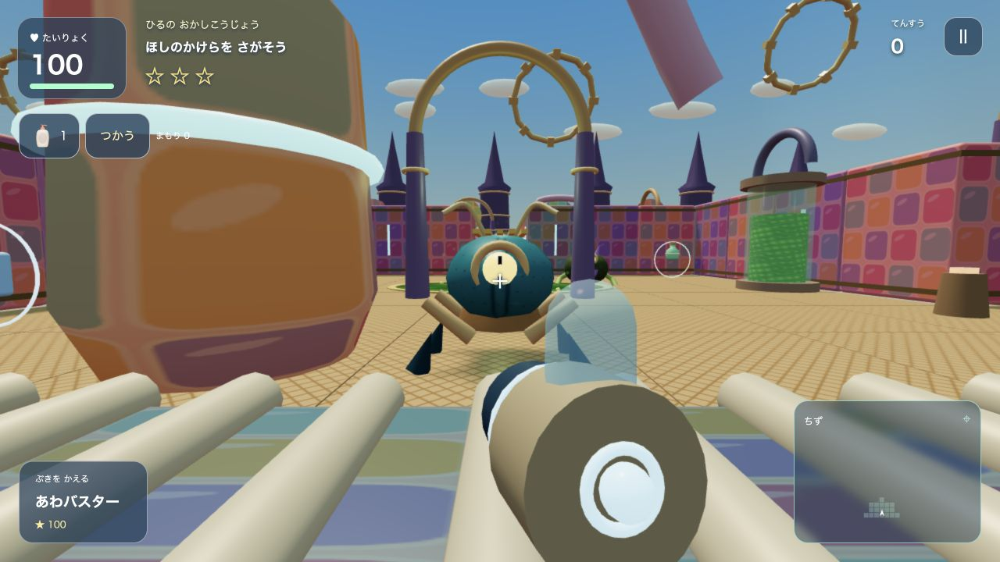
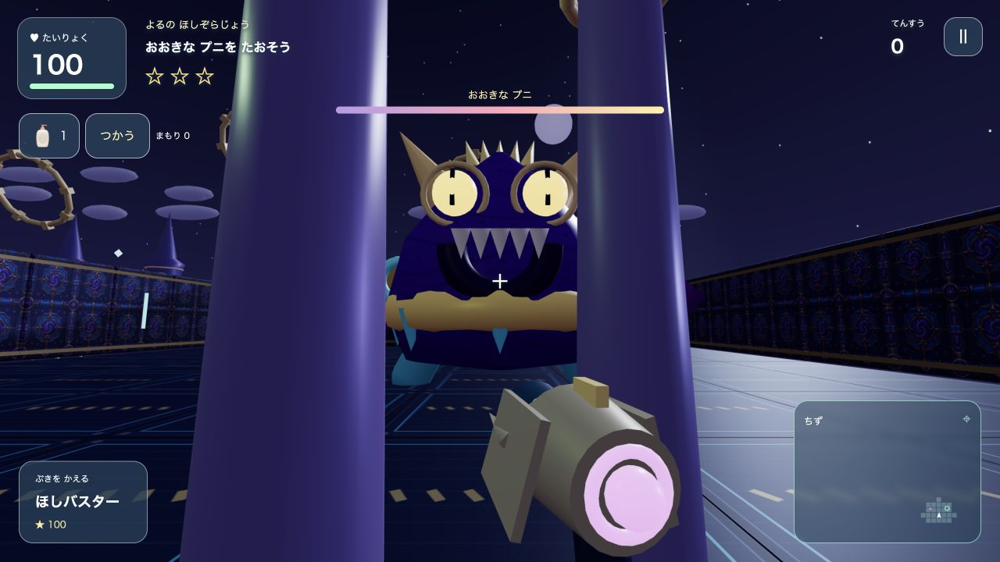

01 ／ あさ
あさの おもちゃひろば
あおぞらの した、ぼうけんが はじまる。
おもちゃばこの せかいを
たんけんしよう！

あそぶ ↗トイボックスアドベンチャーは
おもちゃの せかいを ぼうけんする ブラウザゲーム。
むりょう · ダウンロードなし
パソコン・スマホ・タブレット
おもちゃの せかいで、ほんかく 3Dアクション。
あおぞらの した、ぼうけんが はじまる。

カラフルな おかしの せかいへ。

きらめく よぞらの さきに、なにが まつ？
むずかしさは ゲームで えらべるよ。
スマホ：うえ・したで いどう・ひだりで カニあるき・みぎで むきを かえる・タップで うつ
パソコン：カーソルを あわせて クリックで うつ・みぎドラッグで みまわす・キーで いどう
はじめてなら、ゲームの「れんしゅうじょう」へ。